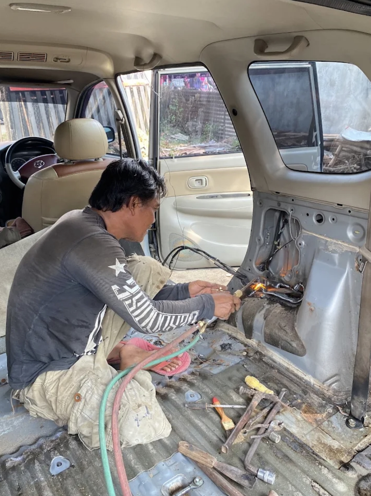
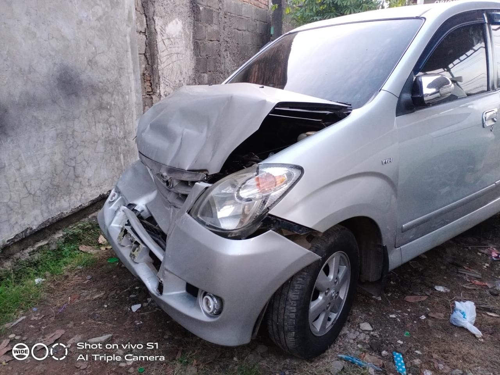
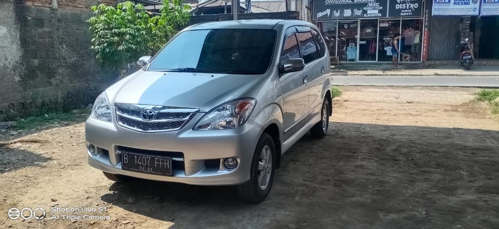
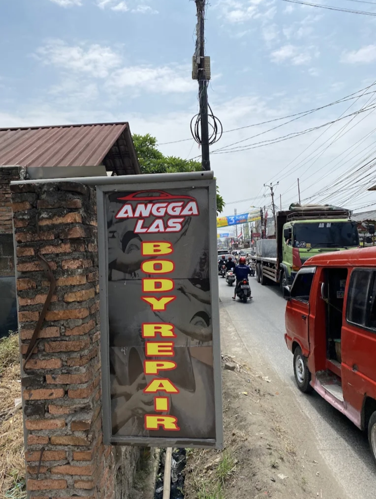

Ditangani langsung oleh Bapak Wahyu Permana dengan dedikasi lebih dari 25 tahun sejak tahun 2000. Solusi bodi penyok, bekas tabrakan, keropos karat, hingga casis patah. Langsung tangan pertama, jujur, dan bergaransi rapi.

Pilih kasus perbaikan di bawah ini. Anda bisa melihat foto berdampingan atau menguji slider pembanding Before | After.


Kap mesin tertekuk parah, bumper amblas, dan fender hancur diketok presisi kembali ke lekukan aslinya, lalu dicat duco pernis glossy yang menyatu rata.
Bukan bengkel calo. Di Angga Las, kendaraanmu ditangani langsung oleh montir senior dengan standar ketelitian tinggi.
Banyak pemilik kendaraan kecewa setelah perbaikan di tempat lain: bodi terlihat rata dari luar, namun di baliknya hanya dilapisi dempul tebal yang mudah retak dan karat yang tidak dibersihkan tuntas.
Didirikan sejak tahun 2000 di Wanasari, Cibitung oleh Bapak Wahyu Permana, Bengkel Angga Las memegang prinsip kejujuran pengerjaan. Pelat yang keropos kami potong dan ganti pelat baru, ketokan pelat ditarik sampai presisi mendekati bentuk asli, dan las karbit diterapkan secara matang agar sambungan kokoh.
Saya selalu pegang langsung setiap mobil dan truk yang masuk ke bengkel. Pelanggan bisa diskusi terbuka soal bahan cat yang diinginkan dan disesuaikan dengan anggaran.

Dari perbaikan baret ringan hingga rekonstruksi tabrakan parah dan peremajaan armada niaga.
Memperbaiki bodi mobil penyok, bumper robek, ringsek akibat tabrakan, serta merekonstruksi pelat bodi keropos dengan teknik ketok presisi.
Pengecatan duco per panel (spet baret fender/pintu/bumper) maupun cat siram full body mobil dan kabin truk dengan oplosan warna akurat.
Mengangkat jamur cat, menghilangkan baret halus (swirl mark), dan mengembalikan kedalaman warna mobil yang kusam agar kembali mengilap.
Pengelasan khusus rangka casis retak, patah, atau bengkok akibat muatan berat maupun kecelakaan dengan sambungan las karbit kokoh.
Perbaikan tangki bahan bakar (bensin/solar) mobil dan truk yang bocor, kropos, atau retak dengan prosedur keamanan pengosongan dan pengelasan presisi.
Peremajaan bodi armada usaha (Colt Diesel, Canter, Elf, GranMax, Carry pick-up). Perbaikan lantai bak keropos, engsel pintu kendur, dan repaint kabin.
Geser atau biarkan otomatis berganti untuk melihat pengerjaan riil Bapak Wahyu di bengkel.
Gunakan fitur perangkai pesan otomatis kami. Cukup klik tombol di bawah untuk memilih jenis kendaraan dan bagian yang rusak tanpa perlu mengetik panjang lebar. Draf pesan otomatis siap dikirim langsung ke WhatsApp Pak Wahyu.
Alasan para pemilik mobil dan pengusaha angkutan di Bekasi setia mempercayakan armadanya kepada kami.
Tidak dilempar ke pihak ketiga atau calo bengkel. Anda berkomunikasi dan bertransaksi langsung dengan Pak Wahyu, montir senior yang memegang alat las dan cat.
25+ tahun menangani ribuan jenis mobil dari era jadul sampai modern. Paham betul titik rawan pelat, lekukan bodi pabrikan, dan ketebalan material.
Biaya disesuaikan secara transparan dengan tingkat kerusakan riil dan opsi bahan cat pilihan Anda. Tanpa biaya siluman di tengah jalan.
Kami memastikan hasil akhir memuaskan: cat menyatu rapi, celah antar panel bodi lurus simetris, dan sambungan las kuat tahan goncangan jalan.
Proses cepat tanpa ribet, dari estimasi awal hingga unit selesai dikerjakan dengan rapi.
Foto bagian bodi yang lecet, penyok, atau keropos dari beberapa sisi lalu kirimkan ke nomor WA Pak Wahyu.
Pak Wahyu akan memberikan penjelasan pengerjaan, opsi bahan cat yang cocok, dan perkiraan biaya yang transparan.
Bawa mobil ke alamat bengkel di Wanasari, Cibitung untuk dicek fisik langsung dan pengerjaan segera dimulai.
Setelah pengerjaan rampung, unit dicek bersama hingga Anda puas dengan hasilnya sebelum serah terima.
Hal umum yang sering ditanyakan pelanggan sebelum membawa mobil ke bengkel.
Lokasi strategis dan mudah diakses di kawasan Wanasari, Kecamatan Cibitung, Kabupaten Bekasi.
Wanasari, Kec. Cibitung, Kabupaten Bekasi, Jawa Barat
Pilih kondisi kendaraan Anda untuk membuat draf pesan otomatis.